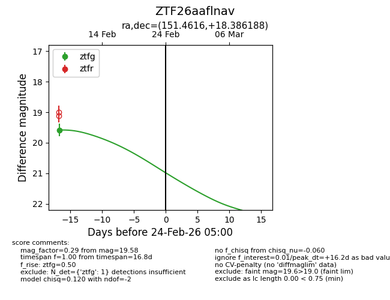
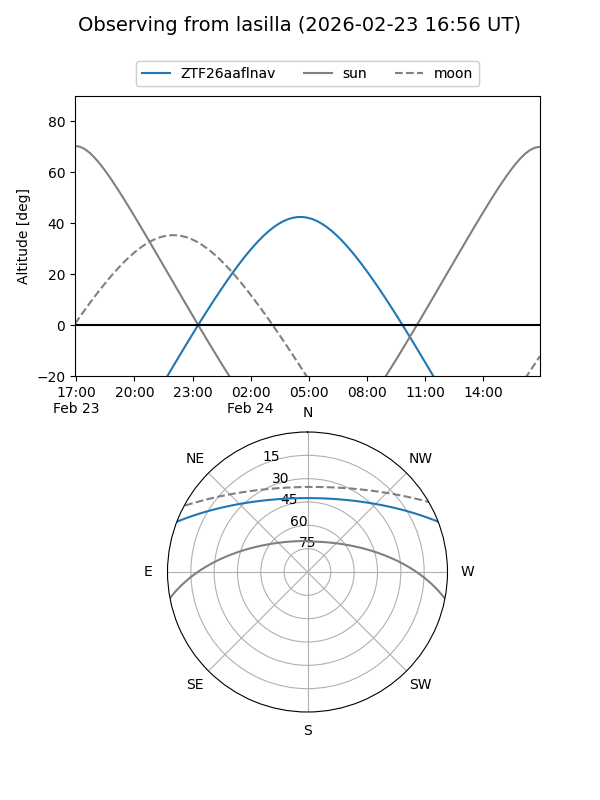
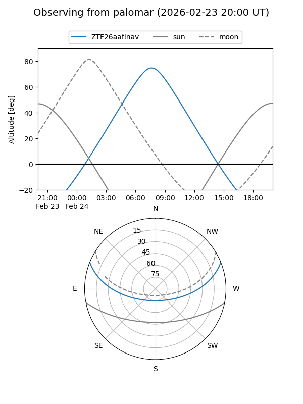

ZTF26aaflnav
Target ZTF26aaflnav at 2026-02-24 09:08
Aliases and brokers:
FINK: link
Lasair: link
ALeRCE: link
alt names
ZTF26aaflnav (ztf,fink_ztf)
Coordinates:
equatorial (ra, dec) = 151.4616,+18.38619
equatorial (HMS+DMS) = 10:05:50.78,+18:23:10.28
galactic (l, b) = (216.9308,+51.01931)
Flags:
Photometry:
last ztfg=19.58
1 ztfg detections
Lightcurve

Visibility


Additional plots